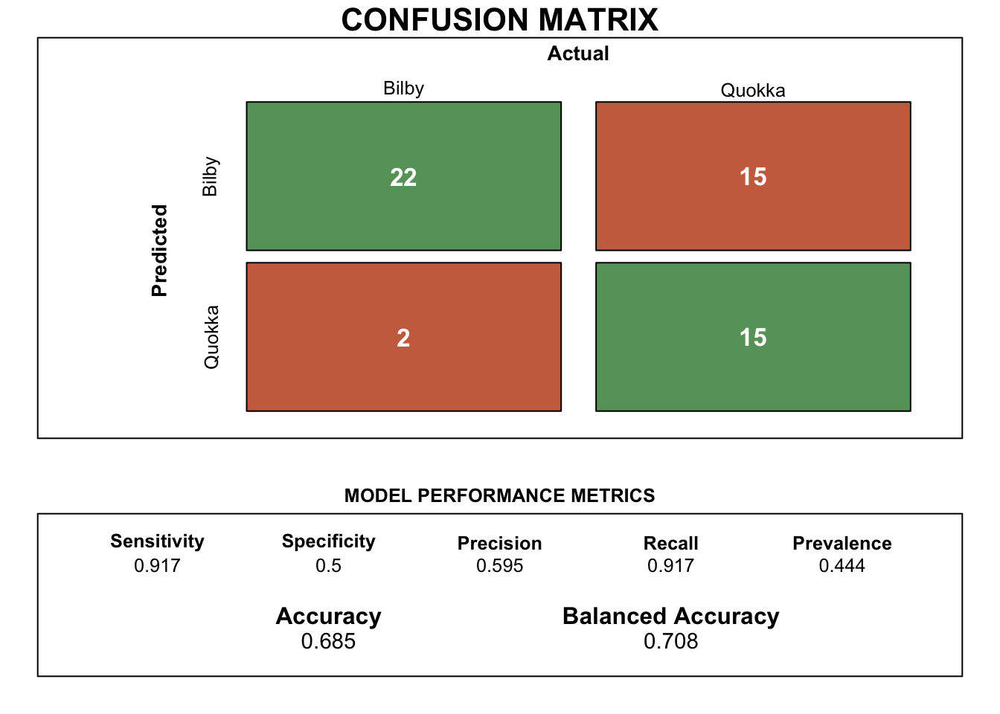
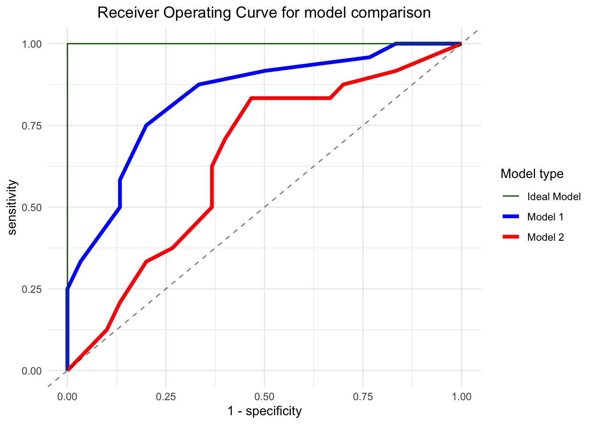

| y | pred1 | pred2 | bilby1 | bilby2 | quokka1 | quokka2 |
|---|---|---|---|---|---|---|
| bilby | bilby | bilby | 0.8 | 0.80 | 0.2 | 0.20 |
| bilby | bilby | bilby | 0.9 | 0.51 | 0.1 | 0.49 |
| bilby | bilby | bilby | 0.9 | 0.60 | 0.1 | 0.40 |
1 Introduction
This analysis serves to provide a comprehensive assessment of the ML classification model for Bilby and Quokka identification. By scrutinizing its performance, interpretability, and practical implications, this study aims to contribute to the advancement of wildlife monitoring and conservation efforts through the integration of machine learning techniques.
1.1 a) Model accuracy
The computations to assess the model metrics are delineated in the panel tabsets below.
The accuracy for model 1 which is calculated based on the number of true positives and the true negatives is observed to be 0.778.
However, the accuracy parameter for a model may not always be the best indicator. This is especially true when the data may contain unbalanced class distribution. In this case, we will rely on balanced accuracy which is based on the true positive and the true negative rate of prediction for the model.
The balanced accuracy for model 1 is found to be 0.775.
Figure 1 illustrates the detailed confusion matrix for model 1 with the critical model parameters which are useful indicators of model performance.

The accuracy for model 2 which is calculated based on the number of true positives and the true negatives is observed to be 0.63. The balanced accuracy for the same model which is based on the true positive and the true negative rates are 0.629.
Figure 2 illustrates the detailed confusion matrix for model 2.

1.2 b) Sensitivity and Specificity with revised threshold values
1) When the threshold value for classification in model 1 is 0.3

The sensitivity for model 1 when the threshold value for positive Bilby classification is 0.3 and above is 0.958. The value for 1-Specificity for the same model which is based on the true positive and the true negative rates is 0.767.
2) When the threshold value for classification in model 2 is 0.3

The sensitivity for model 2 when the threshold value for positive Bilby classification is 0.3 and above is 0.833. The value for 1-Specificity for the same model which is based on the true positive and the true negative rates is 0.667. Other detailed model performance metrics for model 2 with a threshold value of 0.3 can be referred to in Figure 4.
1) When the threshold value for classification in model 1 is 0.4

The sensitivity for model 1 when the threshold value for positive Bilby classification is 0.4 and above is 0.917. The value for 1-Specificity for the same model which is based on the true positive and the true negative rates is 0.5. Other detailed model performance metrics for model 1 with a threshold value of 0.4 can be referred to in Figure 5.
2) When the threshold value for classification in model 2 is 0.4
The sensitivity for model 2 when the threshold value for positive Bilby classification is 0.4 and above is 0.833. The value for 1-Specificity for the same model which is based on the true positive and the true negative rates is 0.467. Other detailed model performance metrics for model 2 with a threshold value of 0.4 can be referred to in Figure 6.
1.3 c) Receiver Operative Curve (ROC) visualisation for model output

Key takeaway
The higher the curve is to the top left point of the plot, the higher the true positive rate of the model (measured through sensitivity) as well as the least false positive rate (measured through 1-specificity). This is often termed as the most ideal model as shown in Figure 7 by the darkgreen line.
As we can also observe in the plot, the area covered by the ROC of model 1 is larger when in comparison to model 2. This indicates that the model 1 is performing better than the results obtained through model 2.
We can additionally obtain a metric of the ROC by computing the area covered under each of these plotted curves. This is termed as the Area Under Curve (AUC) and are as follows:
AUC for model 1 is 0.835.
AUC for model 2 is 0.645.
Based on the AUC values, we can clearly observe that model 1 performs better than model 2.
1.4 References
tourr: Hadley Wickham, Dianne Cook, Heike Hofmann, Andreas Buja (2011). tourr: An R Package for Exploring Multivariate Data with Projections. Journal of Statistical Software, 40(2), 1-18. URL http://www.jstatsoft.org/v40/i02/.
tidymodels: Kuhn et al., (2020). Tidymodels: a collection of packages for modeling and machine learning using tidyverse principles. https://www.tidymodels.org.
tidyverse: Wickham H, Averick M, Bryan J, Chang W, McGowan LD, François R, Grolemund G, Hayes A, Henry L, Hester J, Kuhn M, Pedersen TL, Miller E, Bache SM, Müller K, Ooms J, Robinson D, Seidel DP, Spinu V, Takahashi K, Vaughan D, Wilke C, Woo K, Yutani H (2019). “Welcome to the tidyverse.” Journal of Open Source Software, 4(43), 1686. doi:10.21105/joss.01686 https://doi.org/10.21105/joss.01686.
kableExtra: Zhu H (2024). kableExtra: Construct Complex Table with ‘kable’ and Pipe Syntax. R package version 1.4.0, https://CRAN.R-project.org/package=kableExtra.
caret: Kuhn, M. (2008). Building Predictive Models in R Using the caret Package. Journal of Statistical Software, 28(5), 1–26. https://doi.org/10.18637/jss.v028.i05.
plotROC: Michael C. Sachs (2017). plotROC: A Tool for Plotting ROC Curves. Journal of Statistical Software, Code Snippets, 79(2), 1-19. doi:10.18637/jss.v079.c02.
mulgar: Cook D, Laa U (2023). mulgar: Functions for Pre-Processing Data for Multivariate Data Visualisation using Tours. R package version 1.0.2, https://CRAN.R-project.org/package=mulgar.
uwot: Melville J (2023). uwot: The Uniform Manifold Approximation and Projection (UMAP) Method for Dimensionality Reduction. R package version 0.1.16, https://CRAN.R-project.org/package=uwot.
GGally: Schloerke B, Cook D, Larmarange J, Briatte F, Marbach M, Thoen E, Elberg A, Crowley J (2024). GGally: Extension to ‘ggplot2’. R package version 2.2.1, https://CRAN.R-project.org/package=GGally.
animation: Yihui Xie (2013). animation: An R Package for Creating Animations and Demonstrating Statistical Methods. Journal of Statistical Software, 53(1), 1-27. URL https://doi.org/10.18637/jss.v053.i01.
magick: Ooms J (2024). magick: Advanced Graphics and Image-Processing in R. R package version 2.8.3, https://CRAN.R-project.org/package=magick.
plotly: C. Sievert. Interactive Web-Based Data Visualization with R, plotly, and shiny. Chapman and Hall/CRC Florida, 2020.
ggfortify: Yuan Tang, Masaaki Horikoshi, and Wenxuan Li. “ggfortify: Unified Interface to Visualize Statistical Result of Popular R Packages.” The R Journal 8.2 (2016): 478-489.
OpenAI (2023). ChatGPT (version 3.5) [Large language model]. https://chat.openai.com/chat, full script of conversation here